DVGS: Intensity–Depth Imaging and Visual SLAM
Six selected paired frames per dataset. Click figures to inspect their native-resolution montage. Video timestamps refer to the supplied display timeline.
1. Intensity–depth imaging
0706 sequences
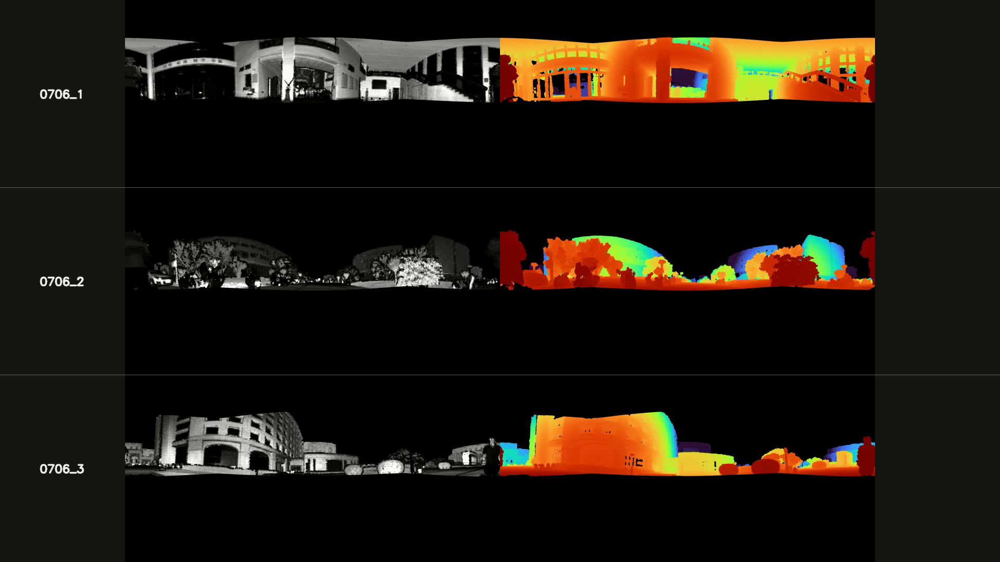
▶ Watch the complete video on Bilibili
0706_1
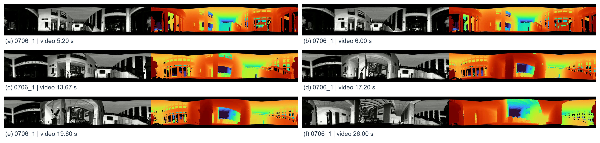
Each pair: relative return intensity (left) and co-registered pseudo-colored radial depth (right). Building contours and surface boundaries can be compared at the six selected viewpoints.
(a) 5.20 s; (b) 6.00 s; (c) 13.67 s; (d) 17.20 s; (e) 19.60 s; (f) 26.00 s
0706_2
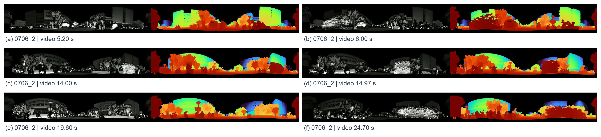
Each pair: relative return intensity (left) and co-registered pseudo-colored radial depth (right). Building contours and surface boundaries can be compared at the six selected viewpoints.
(a) 5.20 s; (b) 6.00 s; (c) 14.00 s; (d) 14.97 s; (e) 19.60 s; (f) 24.70 s
0706_3
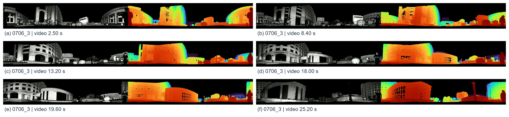
Each pair: relative return intensity (left) and co-registered pseudo-colored radial depth (right). Building contours and surface boundaries can be compared at the six selected viewpoints.
(a) 2.50 s; (b) 8.40 s; (c) 13.20 s; (d) 18.00 s; (e) 19.60 s; (f) 25.20 s
0718 sequences
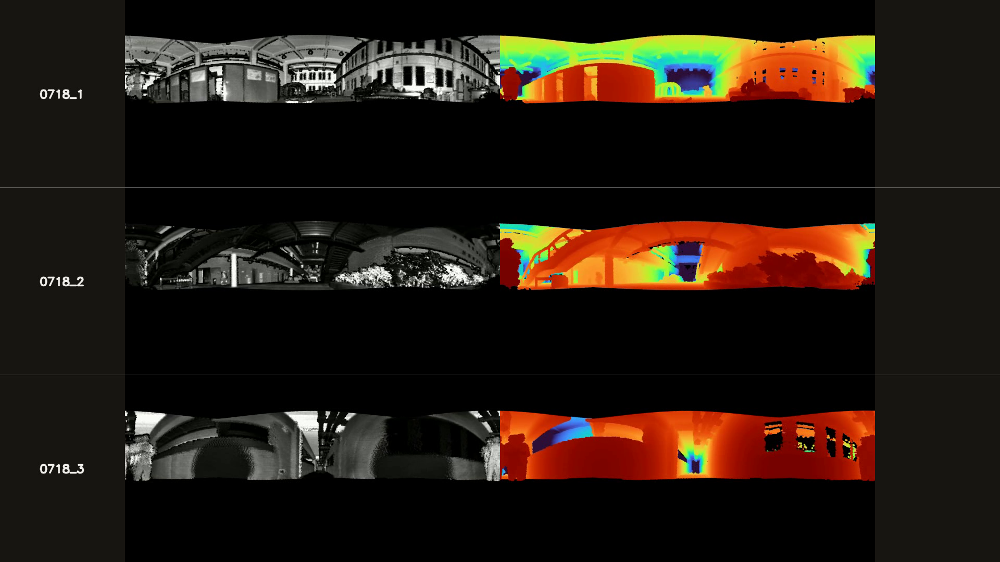
▶ Watch the complete video on Bilibili
0718_1
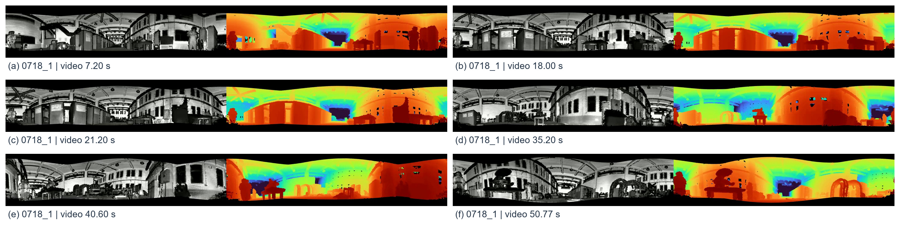
Each pair: relative return intensity (left) and co-registered pseudo-colored radial depth (right). Building contours and surface boundaries can be compared at the six selected viewpoints.
(a) 7.20 s; (b) 18.00 s; (c) 21.20 s; (d) 35.20 s; (e) 40.60 s; (f) 50.77 s
0718_2
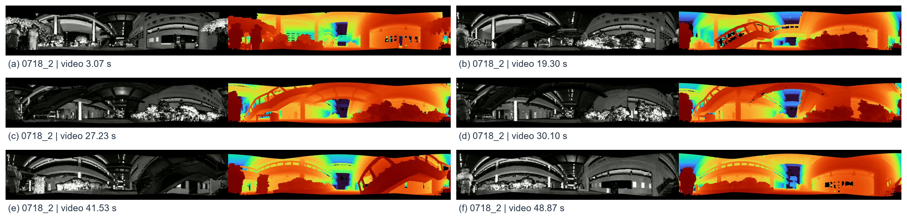
Each pair: relative return intensity (left) and co-registered pseudo-colored radial depth (right). Building contours and surface boundaries can be compared at the six selected viewpoints.
(a) 3.07 s; (b) 19.30 s; (c) 27.23 s; (d) 30.10 s; (e) 41.53 s; (f) 48.87 s
0718_3
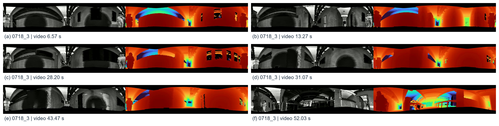
Each pair: relative return intensity (left) and co-registered pseudo-colored radial depth (right). Building contours and surface boundaries can be compared at the six selected viewpoints.
(a) 6.57 s; (b) 13.27 s; (c) 28.20 s; (d) 31.07 s; (e) 43.47 s; (f) 52.03 s
2. Visual SLAM and incremental mapping
0718 sequences
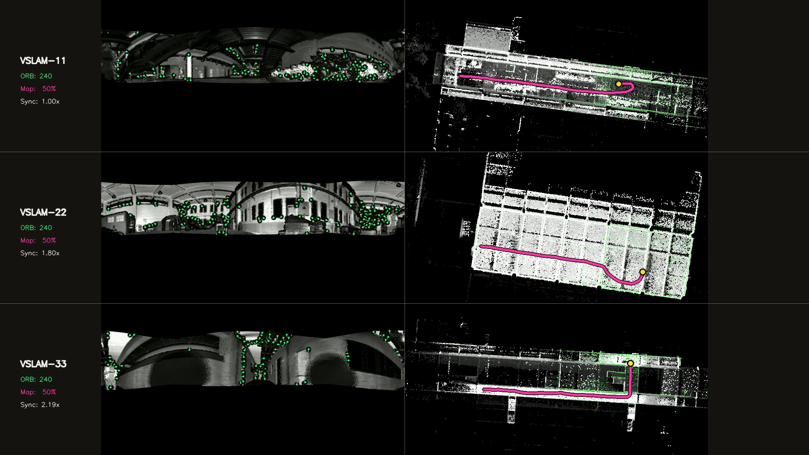
▶ Watch the complete video on Bilibili
VSLAM-11
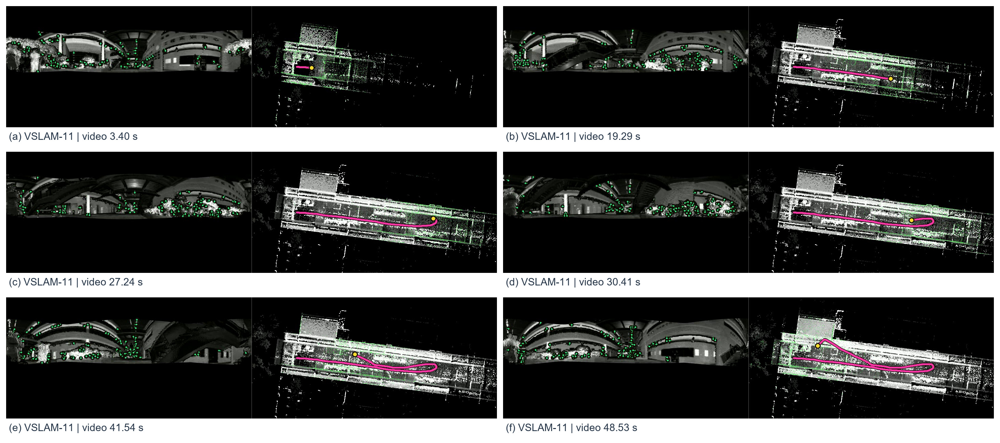
Each pair: ORB features on the intensity image (left) and the source video's incremental point cloud with trajectory (right). The six views show feature observations and successive mapping states.
(a) 3.40 s; (b) 19.29 s; (c) 27.24 s; (d) 30.41 s; (e) 41.54 s; (f) 48.53 s
VSLAM-22
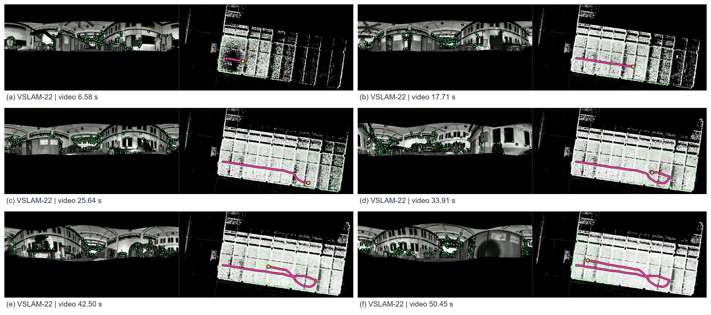
Each pair: ORB features on the intensity image (left) and the source video's incremental point cloud with trajectory (right). The six views show feature observations and successive mapping states.
(a) 6.58 s; (b) 17.71 s; (c) 25.64 s; (d) 33.91 s; (e) 42.50 s; (f) 50.45 s
VSLAM-33
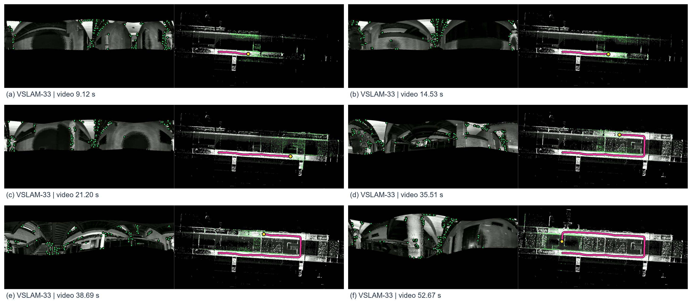
Each pair: ORB features on the intensity image (left) and the source video's incremental point cloud with trajectory (right). The six views show feature observations and successive mapping states.
(a) 9.12 s; (b) 14.53 s; (c) 21.20 s; (d) 35.51 s; (e) 38.69 s; (f) 52.67 s
0706 sequences
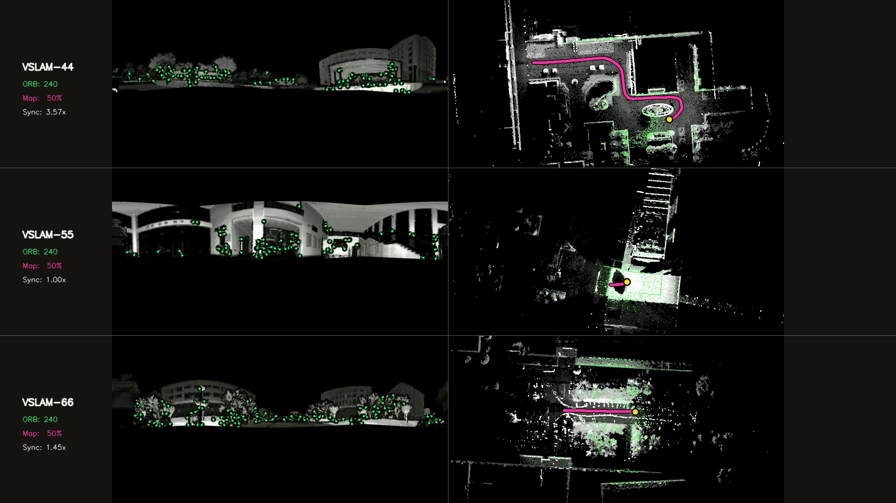
▶ Watch the complete video on Bilibili
VSLAM-44
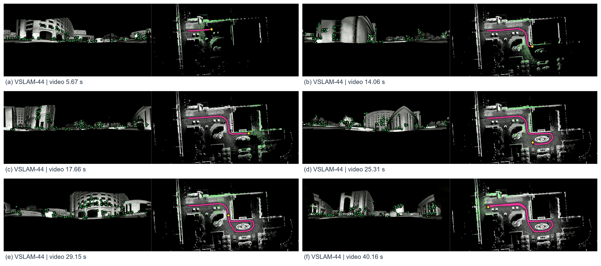
Each pair: ORB features on the intensity image (left) and the source video's incremental point cloud with trajectory (right). The six views show feature observations and successive mapping states.
(a) 5.67 s; (b) 14.06 s; (c) 17.66 s; (d) 25.31 s; (e) 29.15 s; (f) 40.16 s
VSLAM-55
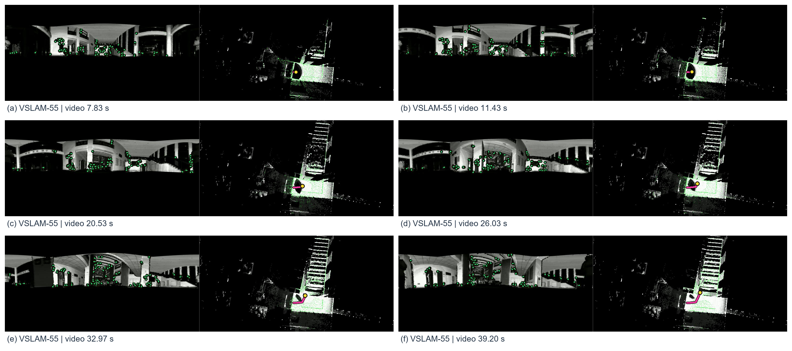
Each pair: ORB features on the intensity image (left) and the source video's incremental point cloud with trajectory (right). The six views show feature observations and successive mapping states.
(a) 7.83 s; (b) 11.43 s; (c) 20.53 s; (d) 26.03 s; (e) 32.97 s; (f) 39.20 s
VSLAM-66
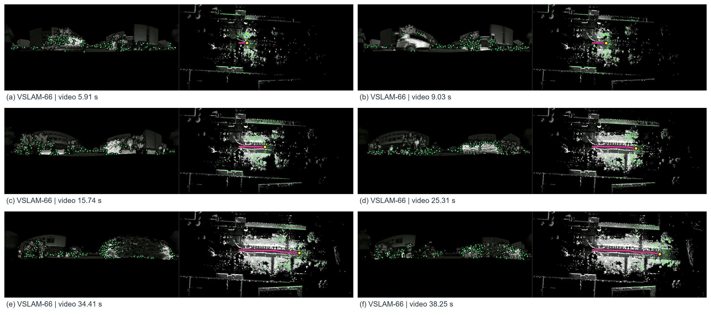
Each pair: ORB features on the intensity image (left) and the source video's incremental point cloud with trajectory (right). The six views show feature observations and successive mapping states.
(a) 5.91 s; (b) 9.03 s; (c) 15.74 s; (d) 25.31 s; (e) 34.41 s; (f) 38.25 s
Direct video-frame crops; no AI reconstruction. Selections are qualitative illustrations. Consult the CSV manifest for provenance.